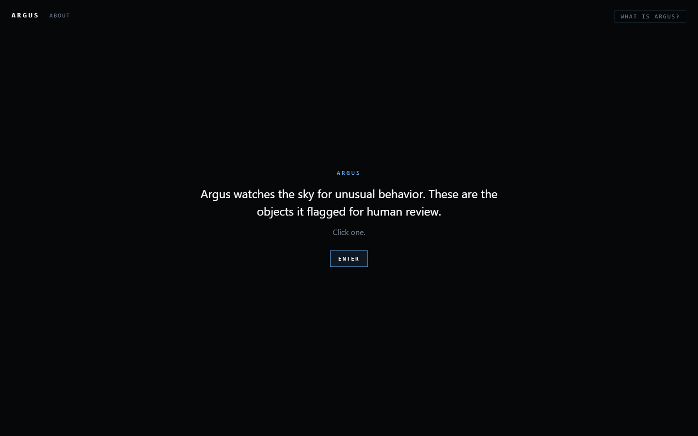
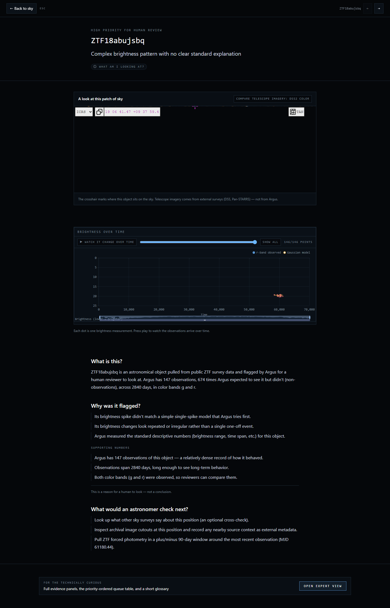

Argus
A small review aid that watches public sky-survey data for objects worth a closer human look — and shows its work.
What Argus is
Argus pulls light-curve data on astronomical objects from the public ZTF survey (via the ALeRCE broker) and runs a few simple comparison checks on each one. When the simple checks don't fit cleanly, the object is queued for a human reviewer.
The thing Argus produces is not a score, and not a classification. It's a small case file for each flagged object: observed brightness over time, where simple models match and where they don't, recommended next checks, and the uncertainty and caveats around all of it.
The web app is just a way to read those case files. The sky view is the entry point; a story view shows one object at a time in plain language; an Expert view exposes the full evidence panels for anyone who wants the precise terms and numbers.
A look


Guided tour
- Open the workstation at greg-oyan.github.io/argus/workstation/. You arrive inside a sky view with flagged objects marked.
- Click a marker. The view flies in and opens that object's story page.
- Read the three plain-English questions: what is this, why was it flagged, what would an astronomer check next. All three are derived from the case-file JSON; nothing is invented.
- If you want the technical layer, open the Expert view. It contains the full evidence panels (assessment, residuals, comparators, features, narrative, sky context, next checks), the priority-ordered queue table, and a short glossary.
- If you'd rather read static reports, every case has portable HTML, Markdown, and JSON exports — links live under the public review queue.
Honest boundaries
Argus is a case-file-first astronomy review aid, not another classifier. These examples do not decide any object's physical identity or assert a final finding. They organize evidence for further review.
Broker labels and catalog matches are metadata, not conclusions. Review priority is a queue sorting heuristic, not a model result. The anomaly_assessment field is an evidence triage summary inside a case file, not an object-identity claim.